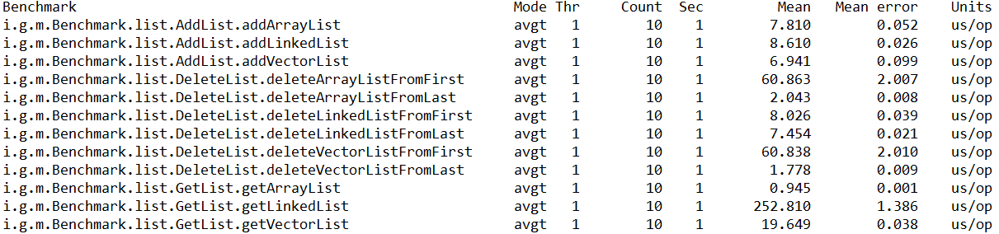
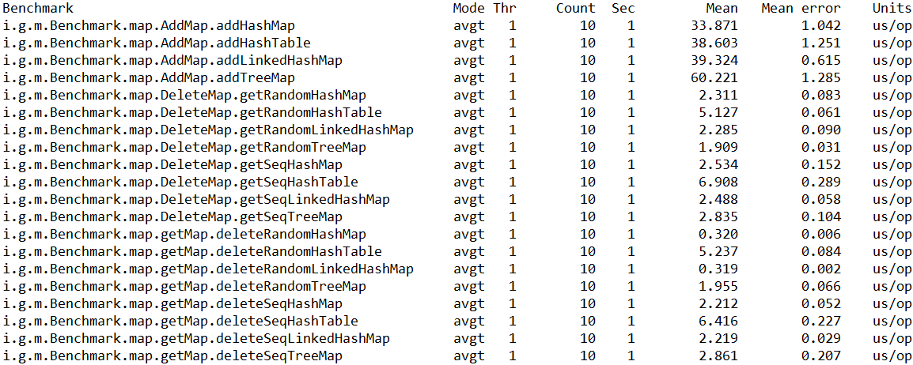

자바 성능 튜닝 이야기
2017-03-05
-읽음
Map, Set, List, Queue의 차이점
| 인터페이스 | 구현 클래스 | 특징 |
|---|---|---|
| Map | HashMap TreeMap HashTable Properties |
Key-Value의 쌍으로 이루어진 데이터의 집합. 순서가 없으며 Key의 중복을 허용하지 않음. Value는 중복 가능 |
| Set | HashSet TreeSet |
순서가 없는 데이터의 집합. 중복 불허 |
| List | LinkedList Stack Vector ArrayList |
순서가 있는 데이터의 집합, 데이터의 중복 허용 |
| Queue | PriorityQueue ArrayDequeue |
구조의 양쪽 단에서만 저장/접근할 수 있는 구조 |
Reflection API를 이용하여 매개변수로 넘어온 클래스의 종류 및 메소드 목록을 출력하는 메소드
1 | public void printClassInfo(Object object){ |
Java Collection
SAX와 DOM 파서의 특징 및 장단점
| DOM | SAX | |
|---|---|---|
| 풀네임 | Document Object Model | Simple Api for XML |
| 설명 | XML문서를 트리 구조 형태로 Access 할 수 있게 해주는 API | 자료구조를 만들지 않고 XML문서를 스캔하면서 순차적으로 이벤트를 발생시켜 XML문서에 접근하게 하는 API |
| 파싱 방법 | Tree-Working 기반 | Event 기반 |
| 처리 방법 | 메모리에 Tree 형태로 구조화 | 순차적 이벤트 발생 처리 |
|장점| 1. 문서 구조의 동적 변경 용이
2. 문서 생성, 편집 가능
3. 복잡한 처리 연산에 유리
| 1. 메모리 효율적 사용
2. 단순/속도 빠름
3. XML 문서 크기에 무관 |
|단점| 1. 메모리 사용량 많음
2. 처리속도 느림
| 1. 문서 생성, 편집 불가 (Read 전용)
|
|접근 방식|Random Acecss|Streaming|
참조
XML파싱 + DOM과 SAX의 차이 http://humble.tistory.com/23
DOM과 SAX을 비교하여 설명 http://i-bada.blogspot.kr/2012/05/dom-sax.html
JMX ?
JMX (Java Management Extensions)
어플리케이션과 서비스를 관리하고 감시하기 위한 표준
자바 기반의 어플리케이션을 모니터링하고 관리하는 기능을 제공
JSR 3 (Spec.) & JSR 160 (Remote API) 에서 정의
J2SE 5.0부터 플랫폼에 포함
참조
JMX를 모니터링 할 수 있는 도구
VisualVM
JConsole
JManage
Web access log 패턴 분석
httpd.conf 의 Log format 설정
| 표현문자 | 설명 |
|---|---|
| %i | 헤더의 내용 |
| %l | 원격 로그인명 |
| %u | 원격 사용자 |
| %t | common log format 시간 형식의 시간 |
| %r | 요청의 첫번째 줄 |
| %s | status |
| %b | Http 헤더를 제외한 전송 바이트 수, ‘0’은 ‘-‘로 표시 |
| %D | 요청을 처리하는데 걸린 시간 (마이크로초 단위) |
| %T | 요청을 처리하는데 걸린 시간 (초 단위) |
자바 GC 종류
Serial Collector
Parallel Collector
Parallel Compacting Collector
Concurrnt Mark-Sweep Controller
Garbage First Controller
참조
- Garbage Collection -part 2 http://blog.embian.com/68
GC 상황을 모니터링할 수 있는 도구
jstat
GCViewer
GC Analyzer
JMH를 사용하여 Java SE에 있는 List를 구현한 클래스들의 추가/조회/삭제 기능의 성능을 비교

JMH를 사용하여 Java SE에 있는 Map를 구현한 클래스들의 추가/조회/삭제 기능의 성능을 비교
